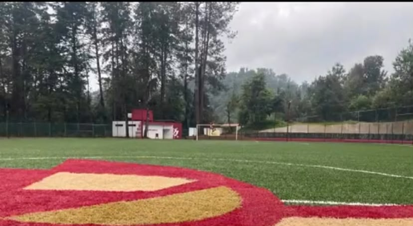
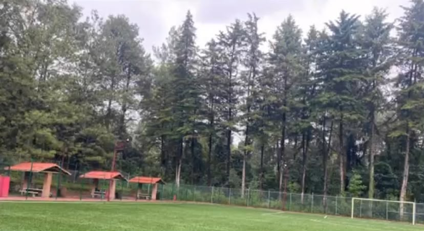
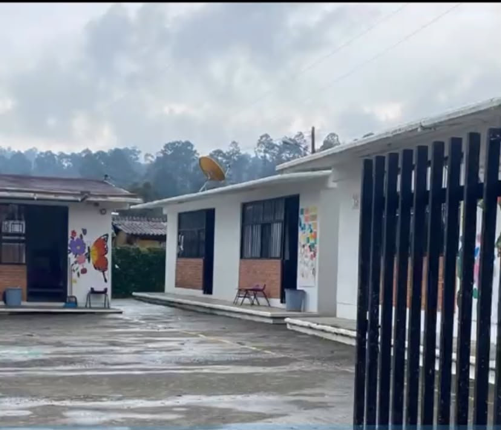
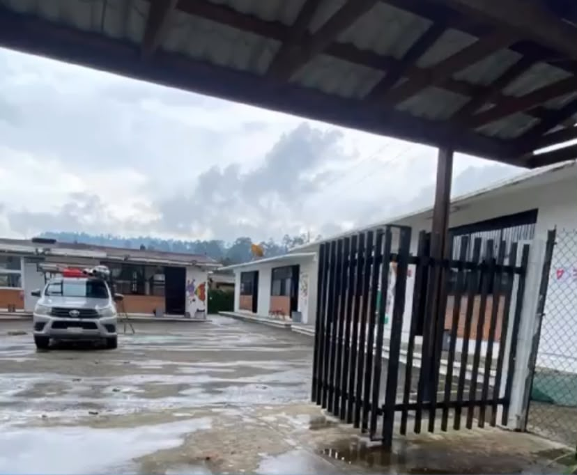

"Lo más visitado"
"Cuadrilla de Dolores"
Cuadrilla de Dolores es una localidad del municipio de Valle de Bravo, en el Estado de México. Administrativamente, está reconocida como uno de los pueblos del municipio y cuenta con servicios educativos, espacios comunitarios y lugares de reunión para sus habitantes.
La comunidad tiene importancia para las localidades cercanas porque ofrece servicios educativos y espacios de convivencia. Entre los lugares que destacan están su unidad deportiva, la iglesia dedicada a Nuestra Señora de los Dolores y la telesecundaria Héroes de la Independencia.
"Deportiva de Cuadrila de Dolores"
La Unidad Deportiva de Cuadrilla de Dolores es un espacio público destinado a la recreación, la actividad física y la convivencia de los habitantes. Forma parte de las obras de infraestructura deportiva impulsadas en el municipio de Valle de Bravo para ampliar las opciones de actividad física fuera de la cabecera municipal.

¿Para qué sirve la deportiva?
Practicar deportes: permite contar con un espacio dedicado a las actividades físicas y deportivas de la comunidad. Promover la salud: la práctica regular de ejercicio ayuda a desarrollar resistencia, coordinación, fuerza y hábitos saludables.
Fomentar la convivencia: estos espacios permiten que niños, jóvenes y adultos compartan actividades y participen en eventos comunitarios.
Ofrecer alternativas para los jóvenes: tener instalaciones deportivas cercanas amplía las opciones para aprovechar el tiempo libre.
Impulsar la participación comunitaria: los espacios deportivos pueden utilizarse para actividades organizadas, encuentros y torneos, según las instalaciones y la programación disponibles.
"Importancia para Cuadrilla de Dolores"

La construcción de una unidad deportiva representa una inversión en infraestructura comunitaria. Antes de contar con suficientes espacios deportivos, las posibilidades para practicar distintas disciplinas pueden ser limitadas. Un proyecto de este tipo busca ampliar las oportunidades para que los habitantes realicen ejercicio y convivan sin tener que trasladarse necesariamente a otros puntos del municipio.
En un documento escolar de diagnóstico de la telesecundaria de la localidad, elaborado en 2023, se mencionaba que los espacios disponibles para practicar deportes eran limitados. Esto ayuda a entender por qué el desarrollo de infraestructura deportiva puede ser importante para la comunidad
La escuela se llama oficialmente Telesecundaria OFTV No. 0437 Héroes de la Independencia. Es una institución pública de educación básica ubicada en Cuadrilla de Dolores, municipio de Valle de Bravo, Estado de México. Su clave de Centro de Trabajo es 15ETV0441T.
El plantel ofrece educación secundaria mediante la modalidad de telesecundaria, diseñada para atender a estudiantes de comunidades donde este modelo educativo facilita el acceso a la educación. En México, las telesecundarias combinan la enseñanza de docentes con materiales educativos y recursos audiovisuales.

"Características de la escuela"
De acuerdo con los registros educativos publicados:

"Cuadrilla de Dolores"
"Iglesia Nuestra Sra. De los Dolores"
La Iglesia Nuestra Sra. De los Doloress se encuentra establecida en la comunidad de Valle de Bravo, Estado de México, funcionando como un punto de referencia espiritual para los residentes locales. Este templo católico, como muchos de su tipo en la región, representa un núcleo para la vida devocional de su barrio, un lugar donde la fe se manifiesta a través de las celebraciones.